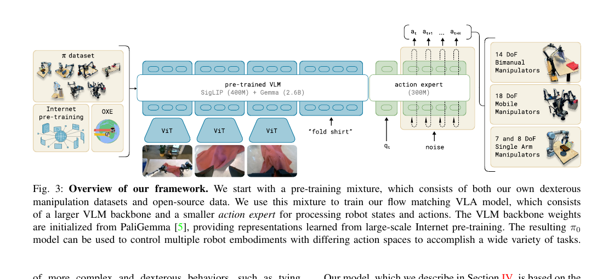

VLA TECHNICAL ROADMAP / PUBLIC EDITION
具身 VLA 技术报告路线图
以通用基础模型为中心，将数据生成、动作接口、交互记忆与统一评测组织为可持续扩展的研究系统。
整理自“具身 VLA 研究 2026”与技术报告看板（2026-08-26 档案）；2026-11-04 编辑为公开阅读版。以下系统设计为研究路线。
01 / 数据引擎：把多源示范编译为统一交互
通用具身模型需要同时吸收真实机器人演示、仿真专家轨迹、策略执行和人工纠正。数据引擎的核心任务是统一这些记录的含义：同步观察、指令、机器人状态、动作、阶段与结果，并保存来源和版本，使一条轨迹可以进入训练、检索与评测。
| 阶段 | 输入与处理 | 产出 |
|---|---|---|
| 数据接入 | 真实演示、仿真专家、策略交互、纠正操作 | 来源、本体、许可与版本记录 |
| 标准化 Episode | 多视角 RGB、时间戳、状态、动作、指令 | 统一单位、坐标系与控制语义 |
| 示范编译 | 对象角色、任务阶段、EEF 运动与终止条件 | 结构化任务表示与时序片段 |
| 质量筛选 | 同步、运动学、动作范围、重复检查与回放 | 可训练、可检索的交互记录 |
| 经验闭环 | 执行 → 纠正 → 确认 → 数据更新 | 任务相关难例与持续回归集合 |
数据划分按对象、场景、语言、动力学、相机与任务组合展开。在同一维度内逐渐扩大变化范围，可以把基础模仿学习与分布外恢复组织成连续的研究路线。
02 / 模型架构：语义任务与连续动作共享上下文
基础方案采用视觉语言主干与连续动作专家。视觉语言部分处理场景、指令和任务上下文，动作专家生成 EEF 或本体动作块。任务阶段、对象目标、动作约束和完成条件以短结构化表示连接高层任务与低层执行。
观察 + 指令 + 示范上下文 + 交互记忆
↓
共享视觉语言主干
↓
任务阶段与目标条件 ＋ 连续动作专家
↓
本体适配与闭环执行
↓
状态变化与任务结果 → 更新交互记录
EEF 提供跨本体的公共几何接口；关节、底盘、夹爪与多指手则保留具名控制语义。运动学一致性将本体动作与公共末端表示连接起来。历史观察、关键帧、对象状态与任务阶段共同组成有界上下文，控制信息的容量与延迟。

03 / 训练路线：能力、泛化与交互适配
| 阶段 | 主要监督 | 研究目标 |
|---|---|---|
| 多源预训练 | 动作分块、语言与视觉任务 | 建立通用场景理解与操作能力 |
| 本体与任务适配 | 本体动作、末端位姿、任务结果 | 对齐具体机器人与控制频率 |
| 示例条件学习 | 当前任务与相关支持轨迹 | 利用少量示范完成新组合 |
| 失败与纠正学习 | 实际偏差、配对修正与恢复轨迹 | 将执行经验转化为精确动作调整 |
| 跨轮持续更新 | 新交互、代表性回放与旧任务 | 联动经验积累与能力保持 |
训练目标可以在动作预测之外引入未来 EEF、对象位姿和阶段信息。部署时保留满足闭环延迟的动作路径，辅助任务主要服务于表征学习。上下文长度、动作块长度与执行前缀需要结合机器人控制器和硬件响应进行配置。
04 / 实验矩阵：让每组结果回答一个问题
技术报告围绕能力、泛化、经验利用、效率与跨本体展开。每个面板明确模型、数据版本、观察输入、控制预算和指标，再在共同协议下增加方法与组件。
| 研究问题 | 评测设计 | 结果形式 |
|---|---|---|
| 基础操作能力 | LIBERO / RoboTwin 的标准任务目录 | 套件、任务与总体成功率 |
| 环境变化下的泛化 | LIBERO-Plus / PRO、对象与场景划分 | 扰动轴 × 模型矩阵 |
| 经验的使用方式 | 成功、配对、常量与重分配上下文 | 共享案例上的配对结果 |
| 失败后的恢复 | 重置重试与中间状态接续分别评测 | 恢复率、两次内成功率、动作预算 |
| 部署成本 | 固定输入、硬件和动作块 | P50 / P95、显存、吞吐 |
| 跨轮学习 | 连续任务与经验更新 | 能力保持矩阵与随交互次数变化曲线 |
| 真实机器人 | 目标本体、相机和控制器配置 | 任务表、现场视频与执行时长 |
05 / 发布体系：报告、结果与案例联动
一份完整的技术报告可以连接四种阅读方式：方法图解释机制，结果表展示规模与效果，视频呈现动作细节，结构化样本支持逐例浏览。模型、数据和评测版本随结果一起发布，为后续增量研究提供稳定坐标。
KnowinMem 看板沿这一结构组织现有研究：公开基准与效率已完成，独立纠错保留全部匹配对照，RoboTwin 数据与评测接续体现在进度面板，跨轮和真机作为后续路线展示。